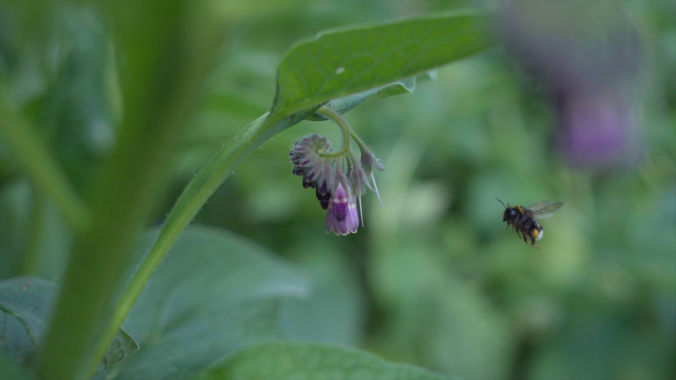

At Munjiri, we specialize in creating compelling videos that drive change. We work with charities, NGOs, and social enterprises to amplify their mission, connect with their communities, and inspire action through purpose-driven video content.


We partnered with the Obama Foundation to create a powerful video highlighting the work of Eric Mlambo, founder of the Footprints Foundation in South Africa, and his impact on girls' education and health.
We Created: A documentary-style video celebrating fathers and their role in shaping a brighter future. It focuses on Eric’s mission, inspired by his daughter, and the Foundation’s support through the Girls Opportunity Alliance.
Key Highlights:
Eric’s personal story and his work in South Africa.
A Father’s Day message about how his daughter inspires his mission for all girls.
Powerful visuals showcasing community-driven solutions.
Impact: The video amplified Eric’s story, increasing engagement with the Obama Foundation’s programs and sparking global conversations, while attracting more supporters to the Foundation’s mission.
In today’s world, access to technology means access to education, jobs, and opportunities, but millions of people still don’t have it. Computer Aid is changing that by providing refurbished computers to schools, nonprofits, and communities worldwide, helping to close the digital divide.
We Created: A compelling video showcasing how Computer Aid’s work is transforming education and creating opportunities through technology.
Key Highlights:
Captured real stories of students and communities gaining access to computers.
Highlighted how refurbished tech can power education and social change.
Impact: The video helped raise awareness, increase support, and inspire action, ensuring more people around the world get access to the digital tools they need.


In many rural areas, kids might have a school to attend, but without trained teachers and quality learning materials, they struggle to get a real education. That’s where Impact Network makes a difference. Their programs give local teachers the tools and support they need—like tablets, projectors, and weekly coaching—to make learning fun, interactive, and effective.
We Created: A video that shows how technology and training are helping students in Zambia learn and thrive.
Key Highlights: Highlighted how their approach led to huge improvements in reading and math skills.
Shared real student stories to show the impact of having a great education.
Impact: The video helped raise awareness and attract new donors, giving more kids the chance to get a quality education and a brighter future.
Walton Charity is one of the UK’s oldest charities, dedicated to helping disadvantaged individuals access housing, education, and employment. One of their key initiatives is Walton’s vibrant Community Allotment, a green haven where more than just fruits and vegetables grow. This space serves as a stepping stone for personal development, offering volunteering opportunities and work experience.
We Created: A video capturing the amazingness of Walton’s Community Allotment, showcasing how gardening helps individuals build confidence, resilience, and a sense of belonging.
Key Highlights:
Showcased the allotment as a space for personal growth and skill development.
Highlighted real stories of volunteers gaining confidence and work experience.
Impact: The video inspired increased community engagement, encouraging more people to volunteer, participate in events, and support Walton Charity’s mission.
With climate change making farming harder and unpredictable weather threatening livelihoods, SCIAF’s Climate Challenge Programme Malawi (CCPM) is helping communities adapt. Funded by the Scottish Government, this initiative supports tens of thousands of people in Southern Malawi, giving them the tools and knowledge to build a more sustainable future.
We Created: A documentary-style video showcasing how CCPM is making a real difference, from sustainable farming techniques to community-led solutions.
Key Highlights:
Captured real stories from Malawian farmers adapting to climate change.
Showed how training and resources are helping communities secure their future.
Impact: The video helped raise awareness about the urgent need for climate resilience and encouraged more people to support sustainable solutions.
The Pollination Project provides seed funding to grassroots leaders around the world, empowering them to create meaningful, community-driven change. As part of their Profiles in Compassion series, we told the story of David Mulo and his organization, Green-Kenya, which uses sports to teach young people about environmental sustainability and leadership.
We Created: A documentary-style video showcasing David’s journey and the impact of Green-Kenya, inspiring others to take action.
Key Highlights:
Captured David’s passion and dedication to using sports for environmental education.
Showed how small grants can create big change at the grassroots level.
Impact: The video helped raise awareness for Green-Kenya’s work and showcased The Pollination Project’s commitment to supporting grassroots leaders making a difference.


Quick Links:
About us
Video Production Services
Blog
Creative Brand Video Production
Charity and Social Impact Video Production
Sustainable Video Production and Nature Storytelling
Contact Us:
Email: katy@munjiri.com | Video production for people and planet focused brands and organisations.
Based in Portugal and South Africa, offering video production services worldwide.
SUBSCRIBE
Get updates and free resources.